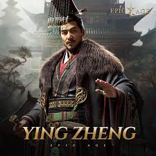

Founder
Name: Qin Shi Huang
Founded: 221 BCE, after conquest of Warring States
Accomplishments: Unified China, built Great Wall, standardized laws and currency
Cause of Death: Mercury poisoning during search for immortality
Location: Xianyang, Shaanxi Province
Greatest Achievements
- Unified China under centralized imperial rule
- Standardized currency, weights, measures, and writing
- Built the first version of the Great Wall
- Commissioned the Terracotta Army tomb complex
- Constructed vast road networks and canals
Major Defeats
- Harsh legalist rule led to widespread rebellion
- Collapse after Qin Shi Huang’s death in 210 BCE
- Peasant uprisings under Liu Bang and Xiang Yu
- Short-lived dynasty—only 15 years
Timeline
- 247 BCE: Ying Zheng becomes King of Qin
- 221 BCE: Qin unifies China
- 215 BCE: Great Wall construction begins
- 210 BCE: Qin Shi Huang dies
- 206 BCE: Qin Dynasty collapses
Empire Map

Fortified Holdings

Won: Xianyang – Imperial capital and administrative hub of the Qin Empire.

Won: Handan – Former Zhao capital captured during unification campaigns.

Won: Daliang – Wei stronghold taken by Qin forces in 225 BCE.

Won: Qincheng – Strategic base near Sichuan used for southern expansion.

Contested: Juancheng – Battleground during Chu-Qin conflicts.

Contested: Gaixia – Site of final battle between Xiang Yu and Liu Bang.

Contested: Yueyang – Southern command post challenged by local resistance.

Contested: Zhangyi – Western outpost near frontier zones.

Lost: Xiangyang – Captured by Han forces during Qin collapse.

Lost: Chenggao – Strategic pass lost during peasant uprisings.

Lost: Shangjun – Northern fort abandoned after rebellion.

Lost: Longxi – Western command lost to tribal incursions.
Troop Units

Core: Infantry — disciplined spearmen and shield bearers in tight formations.

Ranged: Crossbowmen — mass-produced weapons for long-range volleys.

Mobile: Cavalry — light horsemen used for flanking and pursuit.

Shock: Chariots — battlefield platforms for elite warriors and commanders.

Siege: Engineers — specialists in siege ramps, tunnels, and wall breaching.

Support: Archers — rapid-fire units for suppression and defense.

Recon: Scouts — frontier patrols and intelligence gatherers.

Elite: Imperial Guard — personal protectors of the emperor, trained in multiple disciplines.
Notable Heroes & Leaders

Chancellor: Li Si — architect of Qin legalism, standardized writing, and centralized administration across the empire.

General: Meng Tian — led northern campaigns and supervised construction of the Great Wall to defend against Xiongnu incursions.

Commander: Zhang Han — loyal general who fought rebel forces during the Qin collapse and held key territories under siege.

Heir: Fusu — eldest son of Qin Shi Huang, known for his opposition to harsh legalist policies and tragic death in a palace coup.

Emperor: Qin Er Shi — second emperor, whose weak leadership accelerated the dynasty’s collapse amid rebellion and unrest.

Strategist: Zhang Liang — Han advisor who helped orchestrate the downfall of the Qin through subterfuge and tactical planning.

Warlord: Xiang Yu — powerful rebel leader who defeated Qin armies and challenged Han supremacy during the Chu-Han Contention.

General: Bai Qi — “Human Butcher,” feared for his ruthless victories including the annihilation of 400,000 Zhao troops at Changping.

General: Wang Jian — brilliant tactician who led the conquest of Chu, securing final unification under Qin rule.